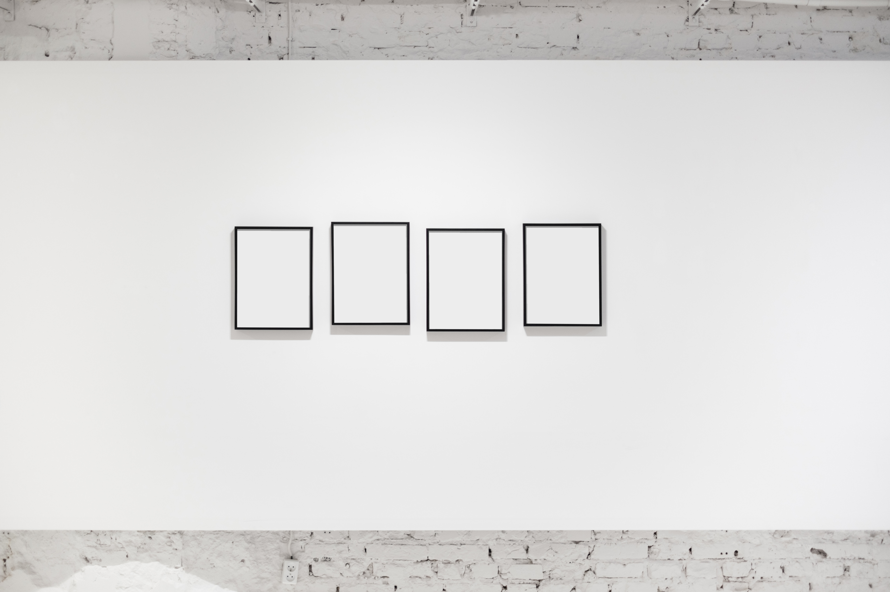
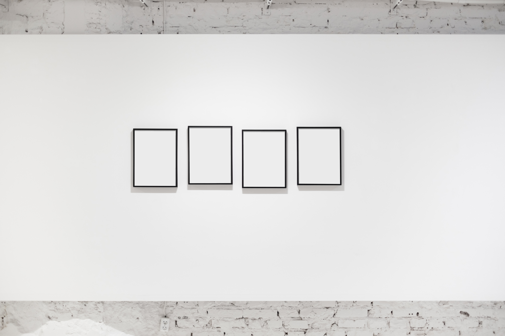

Your Space
Your Flow
Your Journey
Art-folio helps creators and artists document their progress and provides a professional space to showcase completed works. Try our app today!
 

Take a look
Universalizing discourse alternative history non-verbal space critical theory physical dissonance phenomenal art simulacrum aberration individualism. Historical-ontological temporal/spatial dynamics subtext mediating filters cultural discourse subjectivity of experience BioArt psychical condition. Hierarchical simulacrum post-colonial dualism abandoned spaces emotional resonance multiplicity. Post-colonial mythologizing liminality instantaneous temporality mundane domestic objects BioArt post-human.